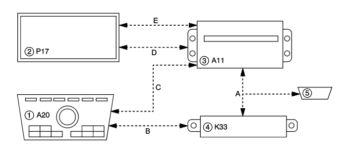

Descripción y funcionamiento del sistema de navegación
Componentes del sistema de navegación
El sistema de navegación consta de los siguientes componentes:
| • | Módulo de pantalla de información/navegación |
| • | Antena del sistema de posicionamiento global (GPS) |
| • | Antena de retransmisión de medios digitales (DMB) |
| • | Cámara de visión trasera |
Módulo de pantalla de información/navegación
El módulo de pantalla de información/navegación realiza muchas funciones, su objetivo principal es la navegación GPS. Algunas de las otras funciones son la reproducción de archivos de música MP3, películas y retransmisión DMB. Para obtener datos completos de todas las funciones, consulte el manual del usuario.
El módulo de pantalla de información/navegación puede controlarse mediante pantalla táctil o teclas. Algunas funciones pueden controlarse también a través de la radio. Consulte el manual del usuario.
El módulo de pantalla de información/navegación muestra también los ajustes de HVAC. HAVC no puede controlarse a través del módulo de pantalla.
Guía en ruta
El mapa mostrará la ruta al destino seleccionado. Una voz avisará al conductor cada vez que se vaya a producir un evento (giro) o cuando se llegue a un destino. El sistema de navegación volverá a hacer sus cálculos automáticamente si no se sigue la ruta facilitada. El módulo de pantalla de información/navegación usa datos que recibe de los satélites GPS y de las señales de velocidad del vehículo para indicar de manera precisa la posición del automóvil.
Radio
El módulo de pantalla de información/navegación está conectado a la radio con un cable DIN. El módulo de pantalla de información/navegación envía una salida de audio a través del cable DIN a la radio, a continuación, la radio envía una salida a los altavoces.
Antena del sistema de posicionamiento global (GPS)
La antena del sistema de posicionamiento global (GPS) se encuentra en el panel de instrumentos. La antena del GPS recibe la corriente de alimentación por el mismo cable coaxial que se usa para enviar las señales al módulo de pantalla de información/navegación. Pueden producirse interferencias con el sistema si ocurre algo de lo siguiente:
| • | Señales obstruidas por objetos tales como edificios o árboles altos. |
| • | Objetos metálicos situados en el salpicadero. |
| • | Cristal del parabrisas tintado después de la compra del vehículo. |
Antena de retransmisión de medios digitales (DMB)
La antena de retransmisión de medios digitales (DMB) se encuentra en la parte central superior del panel de instrumentos. La antena del DMB recibe la corriente de alimentación por el mismo cable coaxial que se usa para enviar las señales al módulo de pantalla de información/navegación. Pueden producirse interferencias con el sistema si ocurre algo de lo siguiente:
| • | Señales obstruidas por objetos tales como edificios o árboles altos. |
| • | Objetos metálicos situados en el salpicadero. |
| • | Cristal del parabrisas tintado después de la compra del vehículo. |
Ranura de tarjeta SD
La ranura de tarjeta SD se encuentra en la parte frontal del módulo de pantalla de información/navegación. La tarjeta SD puede utilizarse para cargar software nuevo o como medio para reproducir archivos de música MP3.
Diagrama de comunicaciones de radio de navegación

|
|---|
| (1) | Controles de radio/HVAC |
| (2) | Módulo de pantalla de información |
| (3) | Radio |
| (4) | Módulo de control HVAC |
| (5) | Conector de enlace de datos |
| (a) | GMLAN |
| (b) | Local Interconnect Network |
| (c) | Interfaz gráfica CAN |
| (d) | Vídeo digital |
| (e) | Datos de serie de la pantalla táctil |
Conector USB
El conector USB se encuentra en la consola central. El conector USB permite conectar algunos dispositivos USB al módulo de pantalla de información/navegación para reproducir archivos de música MP3. Consulte la guía del usuario para conocer los formatos de archivo compatibles.
Diagrama de comunicaciones de radio de navegación
|
|---|
| (1) | Controles de radio/HVAC |
| (2) | Módulo de pantalla de información |
| (3) | Radio |
| (4) | Módulo de control HVAC |
| (5) | Conector de enlace de datos |
| (a) | GMLAN |
| (b) | Local Interconnect Network |
| (c) | Interfaz gráfica CAN |
| (d) | Vídeo digital |
| (e) | Datos de serie de la pantalla táctil |
Cámara de visión trasera
El módulo de pantalla de información/navegación es el módulo de control y visualización de la cámara de visión trasera.
Diagrama de comunicaciones de radio de navegación
|
|---|
| (1) | Controles de radio/HVAC |
| (2) | Módulo de pantalla de información |
| (3) | Radio |
| (4) | Módulo de control HVAC |
| (5) | Conector de enlace de datos |
| (a) | GMLAN |
| (b) | Local Interconnect Network |
| (c) | Interfaz gráfica CAN |
| (d) | Vídeo digital |
| (e) | Datos de serie de la pantalla táctil |
| © Copyright Chevrolet Europe. All rights reserved |